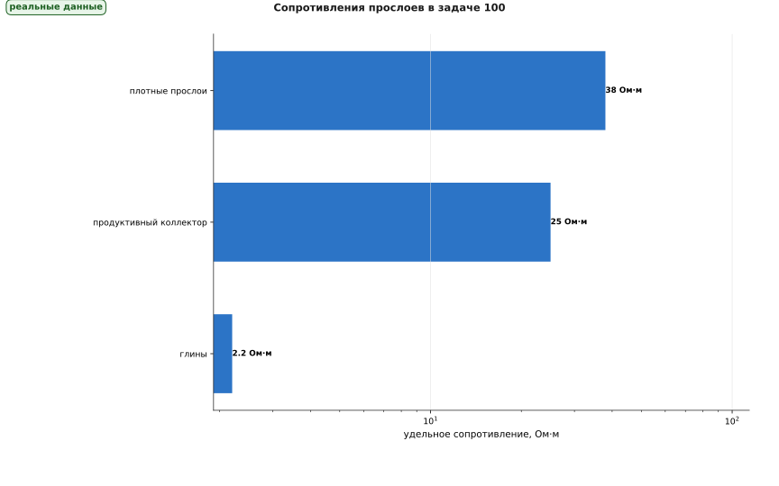

Путь › Эффективная толщина и контакты › Шаг 29 из 34
Плотные прослои в пачке
В книге: «Пачка с прослоями двух типов: глинистыми и плотными; задачи 96–100» стр. 102, 104
Опирается на: шаг 28 «Тонкие слои: толщину считают расчётом» (предпосылка), шаг 27 «Вычесть прослои неколлектора» (предпосылка)
Суть
В пачке бывают прослои двух типов: глинистые и плотные с неактивным цементом.
Плотные прослои почти не меняют сопротивление пачки и не видны на СП и ГМ.
Их учитывают отдельно — микрометодами, методами пористости или по керну, иначе эффективная толщина будет завышена.
Пороговая идея. Плотные прослои почти не меняют сопротивление пачки и не видны на СП и ГМ — их учитывают отдельными методами или по керну. модель
Как это работает
Пачка с прослоями двух типов
Бывает пачка с тонкими прослоями неколлектора двух типов. Одни глинистые, другие — плотные прослои, то есть малопористые породы с неактивным цементом. Тогда среднее сопротивление пачки связано с сопротивлениями коллектора, глины и плотной породы уравнением (65). стр. 102
«связь между средним удельным сопротивлением пачки»
Почему плотные прослои незаметны
Сопротивление плотных прослоев обычно соизмеримо с сопротивлением коллектора. Автор делает вывод: в отличие от глинистых, они слабо влияют на сопротивление пачки. стр. 102
«присутствие плотных прослоев, в отличие от глинистых, на величину»

На показания СП и ГМ плотные прослои с неактивным цементом тоже не влияют. Значит, ни сопротивление, ни методы глинистости их не замечают. стр. 102
«На показания методов СП и ГМ плотные прослои с неактивным цементом также не влияют.»
Как их учесть
Автор предлагает три пути. Первый — выделить плотные прослои и рассчитать их суммарную толщину микроэлектрическими методами. Второй — комплексировать методы сопротивления и СП с методами пористости. Третий — учесть содержание плотных прослоев по представительному керну. стр. 102
«комплексирование методов сопротивления и потенциалов собственной поляризации с методами пористости; учет содержания плотных прослоев в пачке по данным изучения представительного керна»
Материал для задач
Для задач автор даёт рис. 73 — диаграммы комплекса методов по участку хадумского газоносного горизонта. И рис. 74 — материалы ГИС и ГДК для выделения продуктивных коллекторов в терригенном разрезе. ГДК — гидродинамический каротаж, испытание пластов приборами на кабеле. стр. 104
«Диаграммы комплекса геофизических методов по участку разреза хадумского газоносного горизонта»
«Материалы ГИС и ГДК для выделения в терригенном разрезе продуктивных коллекторов»
Цифры и условия
- Задача 100: сопротивление плотных разностей 38 Ом·м, продуктивных коллекторов 25 Ом·м, глин 2,2 Ом·м. стр. 102
- Условие: плотные прослои по сопротивлению близки к коллектору, поэтому сопротивление пачки их почти не выдаёт. стр. 102
Формулы
Уравнение (65): среднее сопротивление пачки с глинистыми и плотными прослоями (индексы восстановлены по смыслу; в тексте искажены). стр. 102
| Обозначение | Что это | Единицы |
|---|---|---|
| $\rho_{п.ср}$ | среднее сопротивление пачки | Ом·м |
| $\chi_{гл}, \chi_{пл}$ | относительные по толщине доли глинистых и плотных прослоев | — |
| $\rho_{гл}, \rho_{пл}, \rho_{пк}$ | сопротивления глины, плотной породы и продуктивного коллектора | Ом·м |
Что это значит для данных модель
Разные типы прослоев видны разным методам; модель смешения по сопротивлению «не видит» плотные прослои.
- Вход
- сопротивление пачки, микроэлектрические методы, методы пористости, керн
- Выход
- доли глинистых и плотных прослоев, эффективная толщина
- Где ломается
- Без микрометодов, методов пористости или керна плотные прослои не учитываются, толщина завышается.
- гипотеза Задачи 99 и 100 — готовые численные тест-кейсы для проверки расчётного модуля эффективной толщины.
Где здесь ручной труд специалиста
- Входные данные
- комплекс диаграмм, керн
- Ручные шаги
- раздельный учёт глинистых и плотных прослоев разными методами
- Точки суждения
- доля плотных прослоев при отсутствии керна
- Время
- трудоёмко для каждой пачки
- Типичные ошибки
- учесть только глинистые прослои
Аналогия модель
Как два вида шума, из которых один не виден основному сенсору — нужен второй сенсор или внешняя разметка.
Где аналогия перестаёт работать: Здесь «второй сенсор» (керн) редкий и дорогой.
Задачи из книги
- Задача 96. Привести примеры сложных продуктивных пластов с прослоями неколлекторов всех типов, пользуясь рисунками, приведенными в настоящем руководстве. стр. 102
- Задача 97. Определить эффективную толщину продуктивного коллектора с учетом прослоев неколлектора; дать характеристику прослоев неколлектора и признаков, по которым они выделяются на примере рис. 68, 73, 76. Нужен рисунок: 68, 73, 76. стр. 102
- Задача 98. Определить эффективную толщину тонкослоистого газоносного коллектора по диаграммам БЭЗ и СП (рис. 73). Выбрать интервалы для определения удельного сопротивления глин и чистого коллектора, максимальной статической амплитуды СП в данном разрезе. В связи с трудоемкостью обработки данных БЭЗ в слоистом коллекторе считать \( \rho_{max} \equiv \rho_{sn} \) . Нужен рисунок: 73. стр. 102
- Задача 99. Рассчитать глинистость \( \chi_{cn} \) глинистого слоистого продуктивного коллектора, если \( \rho_{cn}=2\;O\;m\cdot m \) , среднее удельное сопротивление пачки 4,4 \( O\cdot m \) , пористость наиболее чистых прослоев песчаника 26%, удельное сопротивление вод в пластовых условиях 0,03 \( O\cdot m \) , коэффициент газонасыщения достигает 88%. Определить эффективную толщину пласта, если общая толщина пачки 28м. стр. 102
- Задача 100. Определить эффективную толщину 18-метровой толщи продуктивного коллектора, содержащего прослои глин и плотных пород с неактивным цементом, если удельные сопротивления плотных разностей 38 Ом·м, глин 2,2 Ом·м, продуктивных коллекторов 25 Ом·м. стр. 104
Рисунки книги к этому шагу
- Рис. 73. Рис.73. Диаграммы комплекса геофизических методов по участку разреза хадумского газоносного горизонта: 00' – линия глин. стр. 104 (не перерисован — смотрите в книге)
- Рис. 74. Рис.74. Материалы ГИС и ГДК для выделения в терригенном разрезе продуктивных коллекторов: δp = 1,16 – 1,18 г/см³; ρp = 0,049 Ом·м; dc = 0,19м. стр. 104
Новые понятия
- плотный прослой (tight streak)
- Тонкий слой малопористой породы с неактивным (карбонатным или силикатным) цементом. стр. 102 модель
- ГДК (formation tester)
- Гидродинамический каротаж — испытание пластов приборами на кабеле (по подписи рис. 74). стр. 104 модель
Проверь себя
Верный ответ: Выделяют и считают их толщину микроэлектрическими методами; Комплексируют методы сопротивления и СП с методами пористости; Учитывают по представительному керну
На СП и ГМ плотные прослои не влияют, поэтому нужны другие методы или керн. Где это в тексте (стр. 102) →
Верный ответ: Их сопротивление соизмеримо с сопротивлением коллектора
Глины сильно снижают сопротивление пачки, а плотные прослои по сопротивлению похожи на коллектор. Где это в тексте (стр. 102) →
Источник
Все утверждения шага с дословной цитатой автора и страницей книги (по PDF).
При прослоях двух типов среднее сопротивление пачки связано с сопротивлениями коллектора, глины и плотной породы уравнением (65). наблюдение
«связь между средним удельным сопротивлением пачки»
Плотные прослои, в отличие от глинистых, слабо влияют на сопротивление пачки. вывод
«присутствие плотных прослоев, в отличие от глинистых, на величину»
Плотные прослои с неактивным цементом не влияют на показания СП и ГМ. наблюдение
«На показания методов СП и ГМ плотные прослои с неактивным цементом также не влияют.»
Их учитывают микроэлектрическими методами, комплексированием с методами пористости или по керну. вывод
«комплексирование методов сопротивления и потенциалов собственной поляризации с методами пористости; учет содержания плотных прослоев в пачке по данным изучения представительного керна»
Рис. 73 — диаграммы комплекса методов по хадумскому газоносному горизонту. наблюдение
«Диаграммы комплекса геофизических методов по участку разреза хадумского газоносного горизонта»
Рис. 74 — материалы ГИС и ГДК для выделения продуктивных коллекторов в терригенном разрезе. наблюдение
«Материалы ГИС и ГДК для выделения в терригенном разрезе продуктивных коллекторов»
На этот шаг опираются: шаг 30 «Практикум по терригенному разрезу».